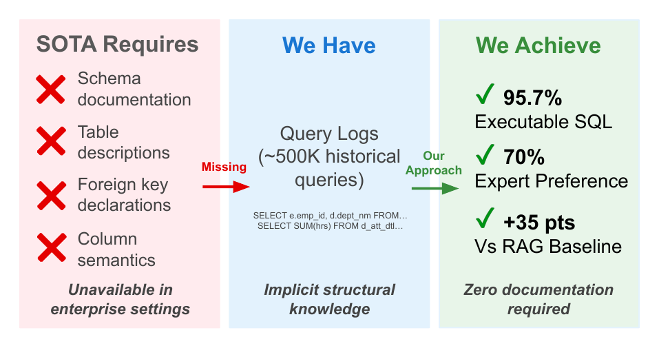
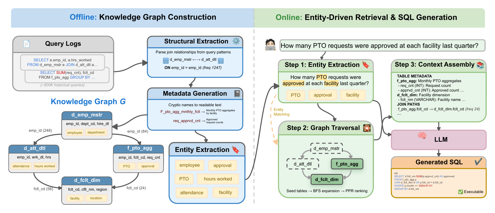

A step-by-step guide to GraphRAG over query logs, with Python, DuckDB, and an honest critique
Imagine your warehouse. You've got 240 tables in the gold layer with names like f_pto_agg and d_wfm_fclty_pop_dfntn_mnl. Nobody wrote descriptions. The foreign keys live in the heads of three senior engineers, and one of them just gave notice.
You also have years of query history: hundreds of thousands of SELECT statements your analysts ran to answer real questions.
Your VP wants a data agent. Where do you start? Most teams embed table descriptions for a RAG retriever, spend six months on a semantic layer in YAML, or document the schema by hand.
What if I told you that you can start without any of them and ship an agent whose SQL your data engineers prefer 70% of the time?
A paper from Amazon and USC posted this October makes that claim. I rebuilt its first stage in DuckDB. Below you'll get the method, stack choices, and a critique.

Figure 1 from the paper: what SOTA requires vs. what enterprises have
The problem: your schema can't explain itself
A user asks about "approved time-off requests," and the right table is f_pto_agg. Embedding similarity can't connect those two strings. They share no words. The authors call this the schema ambiguity problem.
Their fix rests on one observation. Your query logs already record which tables people join, on which keys, and how often. When an analyst writes JOIN d_emp_mstr ON emp_id, the log keeps that join for you.
The method in one picture
Offline, you turn the logs into a knowledge graph. Tables become nodes. Joins become edges, weighted by frequency. An LLM annotates each node with a description and a list of business terms.
Online, you pull business terms out of a question, match them to nodes, walk the graph to find bridge tables, and hand the LLM a small context: tables, join paths, and similar past queries.

Figure 2 from the paper: offline graph construction and online retrieval
Who builds what: LLM calls or Python?
The authors built the graph with plain LLM API calls plus Python. They didn't use an agent harness anywhere in the pipeline.
| Job | What the paper used | Output |
|---|---|---|
| Extract joins from each query | LLM prompt (Appendix B.2) | JSON join triplets |
| Write table metadata | Claude 3.7 Sonnet, temperature 0 | JSON per table |
| Extract business entities | Claude 3.7 Sonnet, temperature 0 | JSON array |
| Store graph, BFS, PageRank | NetworkX (no LLM) | Graph in memory |
| Embedding signal | E5-base-v2 | Vectors |
| Generate SQL | Claude 3.7 Sonnet | SQL |
The paper names Claude 3.7 Sonnet for graph construction. For the join prompt, it says "an LLM" without naming a separate model.
Pick your stack by size
The paper used NetworkX for 240 tables. My rule of thumb for bigger setups:
| Piece | Up to ~1,000 tables | 1,000 to 10,000 tables | Shared across teams |
|---|---|---|---|
| Graph store | NetworkX, saved as JSON | Node and edge tables in DuckDB or your warehouse | Neo4j with Graph Data Science |
| Embeddings | E5-base-v2 on a laptop | DuckDB vss extension or pgvector | Your existing vector store |
| LLM batch jobs | Plain API calls | Anthropic Message Batches API | Batches plus a cache keyed by table |
| Log parsing | sqlglot | sqlglot with query fingerprints | A Spark job |
Don't pick Neo4j for size alone. NetworkX holds tens of thousands of nodes in memory. Reach for Neo4j when several teams need to edit the graph at once, or when you want lineage and access control in one place. Its Graph Data Science library ships PageRank with source nodes, so Step 4 ports over.
Step 1: Mine the logs for tables and joins
Parse every query. Count how often each table appears, and pull out every equality between columns from two different tables. That catches JOIN ... ON clauses and old-style joins buried in WHERE.
Pull the logs from SNOWFLAKE.ACCOUNT_USAGE.QUERY_HISTORY, BigQuery's INFORMATION_SCHEMA.JOBS, or Databricks' system.query.history.
I tested this on TPC-DS in DuckDB: 24 tables, columns like ss_sold_date_sk, and zero declared foreign keys. Its 99 benchmark queries played the role of the log. This step used no LLM.
import collections
import sqlglot
from sqlglot import exp
table_freq = collections.Counter()
join_freq = collections.Counter()
for sql in query_log:
tree = sqlglot.parse_one(sql, read="duckdb")
table_freq.update({t.name for t in tree.find_all(exp.Table)})
for eq in tree.find_all(exp.EQ):
left, right = eq.left, eq.right
if isinstance(left, exp.Column) and isinstance(right, exp.Column):
a, b = owner(left), owner(right) # column -> table
if a and b and a != b:
edge = tuple(sorted([(a, left.name), (b, right.name)]))
join_freq[edge] += 1
owner() maps a column to its table using information_schema. The parser recovered 79 join edges. The top one, store_sales.ss_sold_date_sk = date_dim.d_date_sk, appeared 64 times, and DuckDB's catalog has no record of it.
CTEs, multi-way joins, and subqueries break simple syntax rules, so the authors send each query to an LLM and get back join triplets:
{
"left_table": "schema.employees",
"right_table": "schema.attendance",
"join_type": "INNER",
"join_conditions": "employees.id = attendance.emp_id",
"relationship_type": "EXPLICIT",
"frequency": 342
}On Amazon's warehouse, this produced 1,847 join edges from about 500,000 queries.
Pro tip: strip literals and fingerprint each query first. Dashboards rerun the same SQL thousands of times, so 500K queries often collapse to a few thousand shapes. Run the parser on those and send the LLM the leftovers.
Step 2: Let the LLM write the docs you never had
Logs don't tell you what a table means. For each table, the authors give Claude 3.7 Sonnet sample queries that touch it and ask for this JSON:
{
"table_name": "f_pto_agg",
"description": "...",
"columns": [{"name": "...", "description": "...", "type": "..."}],
"key_columns": ["..."],
"common_joins": ["..."],
"common_filters": ["..."]
}
If analysts keep writing SUM(nbr_swap_approved) / SUM(nbr_swap_request) against a table, the model can guess you're looking at shift swap approval rates.
Pro tip: validate every response against a JSON schema and retry on failure. Store the output in git so a data engineer can review and correct it.
Step 3: Tag each table with business entities
This step drives most of the gains. From each table's metadata, the same model returns a JSON array of business terms: ["employee", "time-off", "approval rate", "facility"]. The prompt tells it to skip IDs and dates. Users ask about shift swaps, not d_shft_swp_agg.
Pro tip: lowercase and dedupe entities across tables, then have a domain expert merge synonyms like "PTO" and "time-off."
Step 4: Retrieve with entities first, embeddings last
When a question arrives, run the same entity extractor on it. "How many PTO requests were approved at each facility last quarter?" gives you PTO, approval, and facility. Then score every table:
| Signal | Weight | What it catches |
|---|---|---|
| Exact entity match | 0.5 | "facility" to facility |
| Substring match | 0.3 | "approval" to "approval rate" |
| Embedding similarity (E5-base-v2) | 0.2 | Paraphrases the first two miss |
The top tables become seeds. Run a breadth-first search up to five hops and score each path by entity coverage plus edge frequency. This finds bridge tables nobody mentioned. Then run Personalized PageRank from the seeds:
import networkx as nx
scores = nx.pagerank(G, personalization={t: 1 for t in seed_tables})Step 5: Assemble a tight context and generate
Claude 3.7 Sonnet gets three blocks: table metadata, join paths with frequencies (shift_swap_agg.facility_id -> facility_dim.facility_id (freq: 847)), and similar past queries as few-shot examples.
The prompt tells the model to use listed tables and columns and nothing else, and to say so when a column is missing. On the BEAVER benchmark, this grounding won 60 rubric comparisons on schema validity, against 17 for the RAG baseline.
Pro tip: run the generated SQL under a read-only role with a row limit and a timeout.
The results
On the public BEAVER benchmark (209 questions, 463 tables), with Claude 3.7 Sonnet generating SQL for both systems:
| Metric | Graph approach | Embedding RAG |
|---|---|---|
| SQL that executes | 95.7% | 60.8% |
| LLM judge wins | 45.5% | 34.0% |
| Rubric judge wins | 47.8% | 30.6% |
On Amazon's warehouse, two data engineers compared outputs blind and preferred the graph system 70% to 10%. Removing entity matching dropped the open-ended score by 5.4%, more than removing graph traversal (2.1%) or PageRank (1.7%).
My critique
Read the numbers twice before you pitch this to your boss.
"Executes" doesn't mean "correct." The 95.7% counts queries that run without errors. On deterministic questions, judges preferred BEAVER's human-written gold SQL 64.9% of the time against 26.3% for the system.
BEAVER had no query logs. The authors built that graph from 127 declared keys plus 1,113 joins an LLM inferred from column names, all weighted 1.0. The log-mining idea gets tested on Amazon's private data alone, as the authors admit.
The private test set is small. It has 35 questions, 25 of them LLM-generated, judged by two engineers.
The baseline is modest. BEAVER results include no CHASE-SQL or agentic baseline.
Embeddings didn't go away. They carry 20% of the score. If you already run an embedding retriever, keep it and add entity matching on top.
Logs carry your history's mistakes. Tables nobody queried stay invisible, and deprecated joins keep high counts. Weight recent queries higher, rebuild the graph weekly, and scrub PII from literals before an LLM reads them.
Where I'd start on Monday
Pull 90 days of query history and run the parser from Step 1. Show the top 50 join edges to a senior engineer and ask which ones look wrong. If the list holds up, generate metadata for your 20 busiest tables and test against 30 real questions from your team's Slack channel.
Sources
- Ömer Faruk Akgül, Nikhil Kapahi, and Prajit Reddy Muppidi. Schema-Free Text-to-SQL: Learning Enterprise Database Structure from Query Logs. arXiv:2610.33946, October 2026.
- Peter Baile Chen et al. BEAVER: An Enterprise Benchmark for Text-to-SQL. arXiv:2409.02038.
Need Help Implementing This?
I offer consulting services for Text-to-SQL systems. Let's discuss your requirements.
Schedule a Consultation